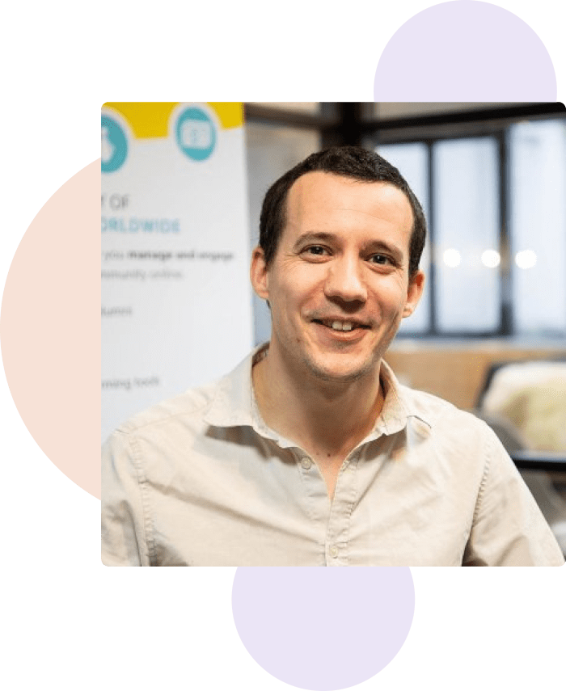

Jean-François Lépine
CTO chez un éditeur logiciel, et développeur web depuis 15 ans, je suis passionné par la qualité logicielle et les tests automatisés.
J'ai longtemps accompagné de grands groupes, puis des startups, dans la mise en place de leurs processus de développement.
Je suis contributeur actif auprès de la communauté Open Source, et suis l'auteur de plusieurs logiciels liés à la qualité, dont le principal est PhpMetrics.
